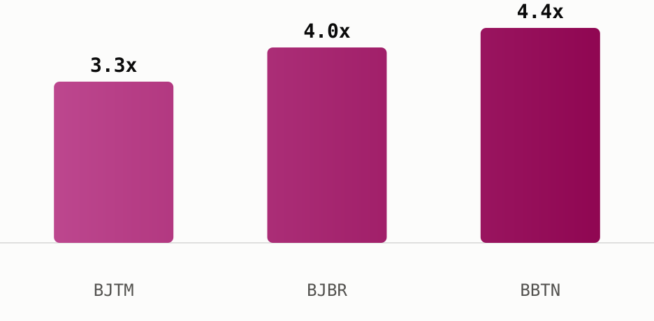

<!-- Sectors x Supertype n8n workshop promo. Issue 13 Jul 2026, data as of 13 Jul 2026. -->
<div style="margin:0;padding:0;background:#f2ede4;">
<table role="presentation" width="100%" cellpadding="0" cellspacing="0" style="background:#f2ede4;padding:24px 0;">
<tr><td align="center">
<table role="presentation" width="600" cellpadding="0" cellspacing="0" style="width:600px;max-width:600px;background:#fdf7ee;border-radius:14px;overflow:hidden;font-family:-apple-system,Segoe UI,Roboto,Helvetica,Arial,sans-serif;color:#1c1c1c;">

  <!-- Header -->
  <tr><td style="padding:28px 32px 8px 32px;border-bottom:2px solid #1c1c1c;">
    <table role="presentation" width="100%"><tr>
      <td style="font-size:24px;font-weight:800;color:#1c1c1c;">Sectors Workshop</td>
      <td align="right" width="110">
        
      </td>
    </tr></table>
    <div style="font-size:13px;color:#6b6b6b;padding-top:4px;">13 July 2026 &nbsp;|&nbsp; 2-day hands-on workshop</div>
  </td></tr>

  <!-- Headline -->
  <tr><td style="padding:22px 32px 0 32px;">
    <div style="font-size:21px;font-weight:800;color:#1c1c1c;line-height:1.3;">Build a self-running IDX screener in two nights</div>
    <p style="font-size:14px;line-height:1.55;color:#333;margin:10px 0 0 0;">
      In two hands-on evenings, you walk out with <b>three tools that run on their own</b>:
    </p>
    <table role="presentation" width="100%" cellpadding="0" cellspacing="0" style="font-size:14px;border-collapse:collapse;margin-top:8px;">
      <tr><td style="padding:2px 0 4px 16px;line-height:1.5;color:#333;">&bull;&nbsp; a screener that filters IDX by your rules</td></tr>
      <tr><td style="padding:0 0 4px 16px;line-height:1.5;color:#333;">&bull;&nbsp; a price alert that pings on big moves</td></tr>
      <tr><td style="padding:0 0 0 16px;line-height:1.5;color:#333;">&bull;&nbsp; a morning digest of the day's top movers</td></tr>
    </table>
    <p style="font-size:14px;line-height:1.55;color:#333;margin:10px 0 0 0;">
      All built live on the Sectors API, no coding background needed.
    </p>
  </td></tr>

  <!-- Top CTA -->
  <tr><td style="padding:18px 32px 0 32px;" align="center">
    <a href="https://supertype.ai/events/n8n" style="display:inline-block;background:#9E0142;color:#ffffff;font-size:14px;font-weight:700;text-decoration:none;padding:12px 28px;border-radius:8px;">Claim your seat now</a>
    <div style="font-size:12px;color:#6b6b6b;padding-top:8px;">July 27 &amp; 28, 18.30 WIB &nbsp;&middot;&nbsp; Online &nbsp;&middot;&nbsp; IDR 590,000 &nbsp;&middot;&nbsp; limited seats</div>
  </td></tr>

  <!-- Banner -->
  <tr><td style="padding:20px 32px 0 32px;">
    
    <p style="font-size:12px;font-style:italic;line-height:1.5;color:#6b6b6b;margin:8px 0 0 0;">
      Two evenings, hands-on, building automated IDX workflows on live Sectors data.
    </p>
  </td></tr>

  <!-- The essentials -->
  <tr><td style="padding:24px 32px 0 32px;">
    <div style="font-size:17px;font-weight:800;color:#1c1c1c;padding-bottom:10px;">The essentials</div>
    <table role="presentation" width="100%" cellpadding="0" cellspacing="0" style="font-size:13px;border-collapse:collapse;">
      <tr><td style="padding:8px 12px 8px 0;color:#6b6b6b;width:34%;border-bottom:1px solid #eee;">Dates</td><td style="padding:8px 0;border-bottom:1px solid #eee;">July 27 and 28, 2026</td></tr>
      <tr><td style="padding:8px 12px 8px 0;color:#6b6b6b;border-bottom:1px solid #eee;">Time</td><td style="padding:8px 0;border-bottom:1px solid #eee;">18.30 to 21.00 WIB (GMT+7), both days</td></tr>
      <tr><td style="padding:8px 12px 8px 0;color:#6b6b6b;border-bottom:1px solid #eee;">Format</td><td style="padding:8px 0;border-bottom:1px solid #eee;">Online, Zoom Conferencing</td></tr>
      <tr><td style="padding:8px 12px 8px 0;color:#6b6b6b;border-bottom:1px solid #eee;">Language</td><td style="padding:8px 0;border-bottom:1px solid #eee;">Bahasa Indonesian</td></tr>
      <tr><td style="padding:8px 12px 8px 0;color:#6b6b6b;border-bottom:1px solid #eee;">Price</td><td style="padding:8px 0;border-bottom:1px solid #eee;">IDR 590,000</td></tr>
      <tr><td style="padding:8px 12px 8px 0;color:#6b6b6b;border-bottom:1px solid #eee;">Who it's for</td><td style="padding:8px 0;border-bottom:1px solid #eee;">Analysts, investors, and automation-curious professionals working with Indonesian capital markets</td></tr>
      <tr><td style="padding:8px 12px 0 0;color:#6b6b6b;">Can't attend live?</td><td style="padding:8px 0 0 0;">Register anyway, the recording ships to your inbox</td></tr>
    </table>
  </td></tr>

  <tr><td style="padding:18px 32px 0 32px;" align="center">
    <a href="https://supertype.ai/events/n8n" style="display:inline-block;background:#9E0142;color:#ffffff;font-size:14px;font-weight:700;text-decoration:none;padding:12px 28px;border-radius:8px;">Claim your seat &rarr;</a>
  </td></tr>

  <!-- What you walk away with -->
  <tr><td style="padding:26px 32px 0 32px;">
    <div style="font-size:17px;font-weight:800;color:#1c1c1c;padding-bottom:10px;">What you walk away with</div>
    <table role="presentation" width="100%" cellpadding="0" cellspacing="0" style="font-size:14px;border-collapse:collapse;">
      <tr><td style="padding:0 0 12px 0;vertical-align:top;line-height:1.5;">
        <b>Zero manual screening, ever again.</b> Set your rules once (P/E, market cap, dividend yield), the workflow screens IDX for you, every day, forever.
      </td></tr>
      <tr><td style="padding:0 0 12px 0;vertical-align:top;line-height:1.5;">
        <b>You hear about the move before your group chat does.</b> Price alert pings the moment a stock swings 5%+, no more checking the terminal every hour.
      </td></tr>
      <tr><td style="padding:0 0 12px 0;vertical-align:top;line-height:1.5;">
        <b>Your morning brief writes itself.</b> Top movers land in Telegram, Gmail, or Sheets before you've opened your laptop.
      </td></tr>
      <tr><td style="padding:0 0 12px 0;vertical-align:top;line-height:1.5;">
        <b>No engineer required.</b> Built on n8n's drag-and-drop workflow builder, if you can use a spreadsheet, you can build this.
      </td></tr>
      <tr><td style="padding:0;vertical-align:top;line-height:1.5;">
        <b>Taught by someone who ships this in production.</b> Not a theory class, you're copying a system your instructor actually runs.
      </td></tr>
    </table>
  </td></tr>

  <!-- How the two nights build to that -->
  <tr><td style="padding:22px 32px 0 32px;">
    <div style="font-size:15px;font-weight:800;color:#1c1c1c;padding-bottom:10px;">How the two nights build to that</div>
    <table role="presentation" width="100%" cellpadding="0" cellspacing="0" style="font-size:13px;border-collapse:collapse;">
      <tr><td style="padding:6px 10px 6px 0;color:#9E0142;font-weight:800;width:22px;vertical-align:top;">1</td><td style="padding:6px 0;vertical-align:top;"><b>Connect</b>, wire n8n to live Sectors data</td></tr>
      <tr><td style="padding:6px 10px 6px 0;color:#9E0142;font-weight:800;vertical-align:top;">2</td><td style="padding:6px 0;vertical-align:top;"><b>Filter</b>, turn raw numbers into buy/watch/ignore rules</td></tr>
      <tr><td style="padding:6px 10px 6px 0;color:#9E0142;font-weight:800;vertical-align:top;">3</td><td style="padding:6px 0;vertical-align:top;"><b>Deliver</b>, route results to where you already work (Sheets, Telegram, Gmail)</td></tr>
      <tr><td style="padding:6px 10px 0 0;color:#9E0142;font-weight:800;vertical-align:top;">4</td><td style="padding:6px 0 0 0;vertical-align:top;"><b>Ship</b>, capstone: your own Daily Screener + Price Alert + Morning Digest, running on a schedule</td></tr>
    </table>
  </td></tr>

  <!-- Your first screener could surface these -->
  <tr><td style="padding:24px 32px 0 32px;">
    <div style="font-size:17px;font-weight:800;color:#1c1c1c;">Your first screener could surface these</div>
    <p style="font-size:14px;line-height:1.55;color:#333;margin:8px 0 0 0;">
      On night one, a screener you build yourself, filtering IDX banks trading under 12x
      trailing earnings, pulls names like this from a live
      <span style="font-family:'JetBrains Mono',ui-monospace,monospace;">sectors.app</span> query:
    </p>
    <table role="presentation" width="100%" cellpadding="0" cellspacing="0" style="margin-top:12px;font-size:13px;border-collapse:collapse;">
      <tr style="background:#fbe9d8;color:#1c1c1c;font-weight:700;">
        <td style="padding:8px 12px;">Ticker</td><td style="padding:8px 12px;">Bank</td><td style="padding:8px 12px;">P/E (TTM)</td>
      </tr>
      <tr><td style="padding:8px 12px;border-bottom:1px solid #eee;"><a href="https://sectors.app/idx/bjtm" style="color:#9E0142;font-weight:700;text-decoration:none;">$BJTM</a></td><td style="padding:8px 12px;border-bottom:1px solid #eee;">Bank Pembangunan Daerah Jawa Timur</td><td style="padding:8px 12px;border-bottom:1px solid #eee;">3.3x</td></tr>
      <tr><td style="padding:8px 12px;border-bottom:1px solid #eee;"><a href="https://sectors.app/idx/bjbr" style="color:#9E0142;font-weight:700;text-decoration:none;">$BJBR</a></td><td style="padding:8px 12px;border-bottom:1px solid #eee;">Bank Pembangunan Daerah Jawa Barat dan Banten</td><td style="padding:8px 12px;border-bottom:1px solid #eee;">4.0x</td></tr>
      <tr><td style="padding:8px 12px;"><a href="https://sectors.app/idx/bbtn" style="color:#9E0142;font-weight:700;text-decoration:none;">$BBTN</a></td><td style="padding:8px 12px;">Bank Tabungan Negara</td><td style="padding:8px 12px;">4.4x</td></tr>
    </table>
    <p style="font-size:12px;font-style:italic;line-height:1.5;color:#6b6b6b;margin:8px 0 0 0;">
      Figures are from sectors.app as of 2026-07-13 unless otherwise cited. Do your own research.
    </p>
    <div style="padding:16px 0 4px 0;">
      
    </div>
    <p style="font-size:12px;font-style:italic;line-height:1.5;color:#6b6b6b;margin:6px 0 0 0;">
      The exact three names your own screener would surface on night one, at the moment this issue went out (sectors.app).
    </p>
    <p style="font-size:14px;line-height:1.55;color:#333;margin:10px 0 0 0;">
      That is the kind of result the workshop teaches you to pull automatically, on a
      schedule, without opening a spreadsheet by hand.
    </p>
  </td></tr>

  <!-- Speaker -->
  <tr><td style="padding:24px 32px 0 32px;">
    <div style="font-size:17px;font-weight:800;color:#1c1c1c;">Speaker</div>
    <p style="font-size:14px;line-height:1.55;color:#333;margin:8px 0 0 0;">
      <b>Alya Dwinanda</b> is a Knowledge Expert at Supertype and Sectors who builds and
      ships API-based AI systems in production, including the kind of n8n workflow
      automation and RAG pipelines you'll build in this workshop. She's a published
      deep-learning and computer-vision researcher (IEEE, with work under review at
      Elsevier), a former AI Researcher at BRIN, and a BNSP-certified Data Scientist. She
      teaches both nights in Indonesian.
    </p>
    <table role="presentation" width="100%" cellpadding="0" cellspacing="0" style="margin-top:14px;">
      <tr><td style="padding:12px 16px;background:#fbe9d8;border-left:3px solid #9E0142;border-radius:4px;font-size:13px;font-style:italic;line-height:1.6;color:#333;">
        The best person to teach a workflow is someone who runs it in production. What
        you'll build over these two nights is drawn from systems your instructor ships for
        real.
      </td></tr>
    </table>
  </td></tr>

  <!-- Final CTA -->
  <tr><td style="padding:26px 32px 4px 32px;" align="center">
    <div style="font-size:15px;font-weight:800;color:#1c1c1c;padding-bottom:10px;">Register now. Seats are limited.</div>
    <a href="https://supertype.ai/events/n8n" style="display:inline-block;background:#9E0142;color:#ffffff;font-size:14px;font-weight:700;text-decoration:none;padding:12px 28px;border-radius:8px;">Claim your seat now &rarr;</a>
  </td></tr>

  <!-- Appendix -->
  <tr><td style="padding:22px 32px 0 32px;">
    <div style="font-size:13px;font-weight:800;color:#1c1c1c;padding-bottom:6px;">Appendix: Sectors API endpoints (fields used)</div>
    <p style="font-size:12px;line-height:1.7;color:#6b6b6b;margin:0;">
      <code style="background:#f2ede4;padding:1px 4px;border-radius:3px;">companies/?where=sub_sector = 'banks' AND pe_ttm &lt; 12&amp;order_by=pe_ttm</code> &mdash; the "what you'll build" teaser table (BJTM, BJBR, BBTN), <code style="background:#f2ede4;padding:1px 4px;border-radius:3px;">pe_ttm</code> band-checked before display
    </p>
  </td></tr>

  <!-- Footer -->
  <tr><td style="padding:22px 32px 28px 32px;border-top:1px solid #e4cdb4;margin-top:12px;">
    <p style="font-size:11px;line-height:1.5;color:#8a8a8a;margin:16px 0 0 0;">
      This newsletter is data reporting and market commentary, not investment advice or a
      recommendation to buy or sell any security. Figures are from
      <a href="https://sectors.app" style="color:#9E0142;text-decoration:none;">sectors.app</a>
      as of 13 July 2026 unless otherwise cited. Do your own research.
    </p>
    <p style="font-size:11px;color:#8a8a8a;margin:10px 0 0 0;">
      &copy; 2026 Sectors.app. All rights reserved. &nbsp;|&nbsp; Privacy Policy &nbsp;|&nbsp; Terms of Service &nbsp;|&nbsp; Unsubscribe
    </p>
  </td></tr>

</table>
</td></tr>
</table>
</div>
